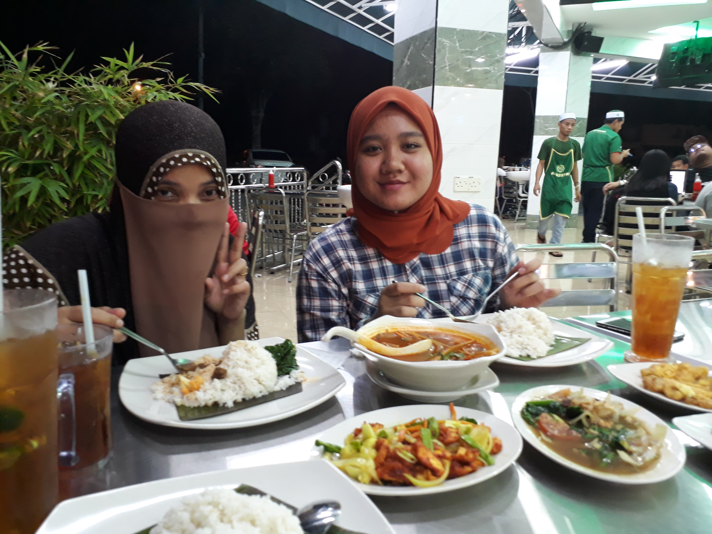

| HOME | BIODATA | EXPERIENCE | EDUCATION | FAMILY | FAVOURITE | GALLERY | CONTACT |
|---|
"Focus on making yourself better, not on thinking that you are better."- Bohdi Sanders
School Camping


I had so much fun during my school life and there are some experience that I would like to share which is I went to the school camping! There are many school camping that I have joined but I will only share two of it which is Kela Camp and Jamboree Camp. This two camp that I have went was the best camp that I have ever experience. As for the Kela Camp, it was a camping that they organized only for Form 5 students since we are the last batch at school. I have learnt so many things during the camping such as how to hiking, how to swimming and woven. By joining this camp also, I get the chance to experience night walk in the jungle. It was so fun and exciting!
I also went to the Jamboree Selangor. As for you information, I'm one of the scout's member at my school. Every year, scout will held camping which we called as Jamboree. I have went to Jamboree International Perak and Jamboree Selangor. Jamboree Selangor was my first Jamboree that I have went and it is super exciting. There are a lots of activities that we have done during the camping. For example, "Malam Kebudayaan". It is one of the compulsory activity that should be done. On that night, everyone need to make a performance that related to the culture. Other than that, as you can see on the picture above, the thing that is behind us is called as gadget. That was build by our team scout. I also learn on how to build it and it was so interesting!
After School

Usually, after SPM, students will do something to earn money after school. As for me, I worked at a restaurant named "Haji Khalid Restaurant". I have worked there for almost 3 months before i continue my study at UiTM Kedah. I have many experiences working there. Everyone there was so nice to me. I have learnt communication skills and also get to polish my social skills. I also learnt on how to solve problem since I need to deal with many types of customers. To be honest, I really miss to work there.
Internship
As I'm taking Diploma in Library Management, this course require me to go for industrial training during my semester break. I'm very excited but nervous at the same time. I have done my industrial training at Ibnu Khaldun Library, Politeknik Sultan Abdul Aziz Shah, Shah Alam. I need to do my internship for 6 weeks. Even though it is only 6 weeks, but I can say that I have gained many of experiences and knowledge there. All the staffs over there are very kind and they accept me just the way I am. The woman at the middle is the chief librarian of this library. She is Mrs. Norhayati. She is very soft and kind hearted person. She also very care about all of her staffs. Every morning, I will go to work together with Seri. Seri is taking the same course with me at UiTM Kedah. I'm very happy to work with her :) I also think that I'm very lucky to get this opportunity to do my industrial training there.
Innovation Competition
One of experience that I will never forget is when I joined innovation competition named ISAIID. ISAIID is stand for International Student Affairs Invention, Innovation and Design Competition. It was a great experience to be in this team where we work so hard to win the competition. However, the competitors are from all over the country and it was very competitive competition but my team managed to get bronzer! :) Eventhough it is just bronzer, but we still felt that our hard work paid off.